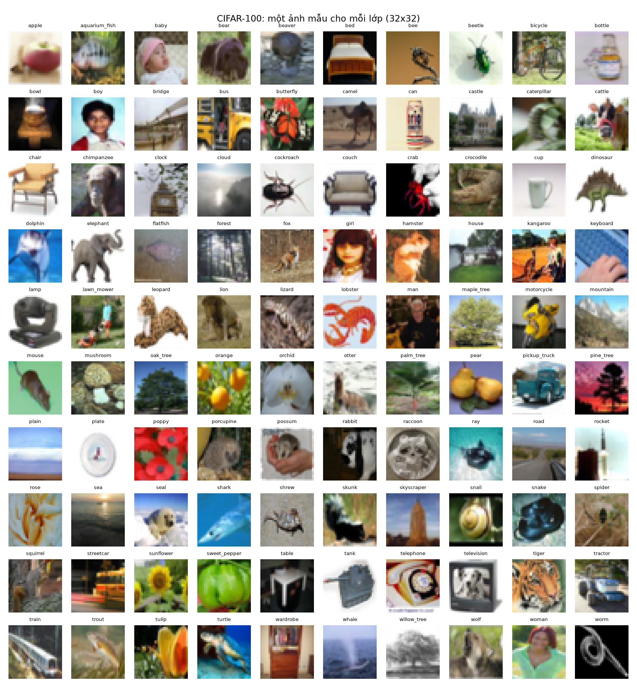
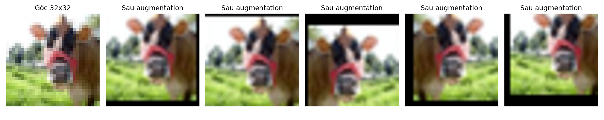

Lựa chọn của nhóm
| Hạng mục | Lựa chọn |
|---|---|
| Tập dữ liệu | CIFAR-100 — 100 lớp, 60.000 ảnh màu 32×32 (Krizhevsky, 2009) |
| Mô hình CNN | ResNet-18 · 11,2 triệu tham số |
| Mô hình Transformer | DeiT-Tiny/16 · 5,5 triệu tham số |
| Trọng số pretrained | ImageNet-1k, qua thư viện timm |
| Kích thước đầu vào | Phóng ảnh lên 224×224 cho mọi cấu hình |
Dữ liệu và cách chia
Mỗi lớp chỉ có 500 ảnh train, ảnh nhỏ và nhiều lớp rất giống nhau — đủ khó để thấy rõ khác biệt giữa CNN và Transformer, giữa học từ đầu và dùng pretrained.
Train · 45.000
450 ảnh mỗi lớp, lấy từ tập train gốc.
Validation · 5.000
50 ảnh mỗi lớp, chia phân tầng với seed 42, dùng để chọn checkpoint.
Test · 10.000
100 ảnh mỗi lớp, chỉ đánh giá một lần ở cuối mỗi thí nghiệm.

Một ảnh mẫu cho mỗi lớp. 100 lớp được gom thành 20 siêu lớp (ví dụ: cây, phương tiện, thú cỡ nhỏ), dùng để phân tích lỗi.
Augmentation

Train: cắt ngẫu nhiên (đệm 4 pixel) và lật ngang, rồi phóng lên 224×224 và chuẩn hoá theo ImageNet. Validation/test chỉ phóng ảnh và chuẩn hoá. Cả 8 cấu hình dùng cùng một pipeline.
Ma trận 8 thí nghiệm
2 kiến trúc × 4 cách huấn luyện, cùng một split.
| Cách huấn luyện | ResNet-18 · trainable | DeiT-Tiny · trainable |
|---|---|---|
| Học từ đầu (from-scratch) | 11.227.812 (100%) | 5.543.716 (100%) |
| Pretrained · chỉ train head | 51.300 (0,5%) | 19.300 (0,4%) |
| Pretrained · đóng băng nửa đầu | 10.544.740 (93,9%) | 2.688.868 (48,5%) |
| Pretrained · fine-tune toàn bộ | 11.227.812 (100%) | 5.543.716 (100%) |
Hai mốc nộp
Dữ liệu và giao thức
Chốt CIFAR-100, split, augmentation, hai mô hình và kế hoạch 8 thí nghiệm. Đã kiểm tra pipeline: cả 8 cấu hình tạo được, phần đóng băng đúng, vòng huấn luyện chạy thông.
So sánh hoàn chỉnh
Chạy đủ 8 thí nghiệm trên GPU, lập bảng và biểu đồ, phân tích lỗi, thảo luận khi nào đóng băng có lợi và ViT cần pretrain đến mức nào.